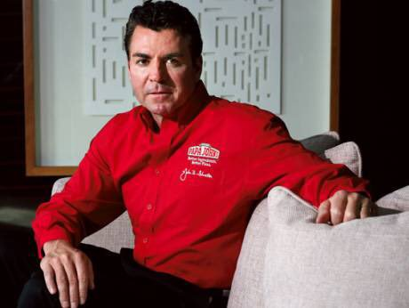
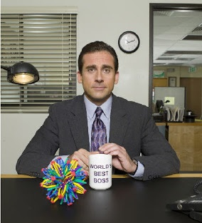
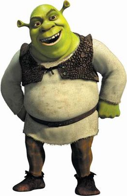

Papa John
A Recipe for Success
"Better ingredients. Better pizza."
John Schnatter, otherwise known as Papa John, has a motto for his pizza; “Better ingredients. Better pizza.” This motto is the foundation of his business that turns a little bit of dough into some serious dough. Papa John’s has become one of the largest pizza chains in the country, and the man himself wants to share a slice of his success with aspiring entrepreneurs.
“Creating a successful business is like making a Papa John’s pizza. Your crust is the base of your business; what can it provide to others. Then, you have your stores as the sauce because they help the rest of your pizza work together. You need fresh mozzarella cheese to hold it all together, which is your staff. Last but not yeast, you add some toppings to make your pizza stand out, which is your marketing. It’s these better ingredients that make a better business; or pizza, for that matter! Some say my business model is cheesy, but it delivers.”
Michael Scott
Being the World's Best Boss
How being a friend first, a boss second, and a father third, makes me the world’s best boss.
Do I have a secret to being the world’s best boss? I wouldn’t call it a secret any more than I would a lifestyle. You see, there are many kinds of relationships people have. Some relationships are cold and bitter. Some are warm and soft. You can have hot and steamy relationships. The point is… In successful relationships, nobody is bossing anyone around. When I go into work as everyone’s friend, they are afraid of how much they love me and I use this to my advantage. It allows me to manage and be on good terms with them at the same time. It’s like hitting two stones with a bird.
Shrek
How to be an Ogre-Achiever
Find out how friendship, home invasion, determination, and a little bit of magic can even help stupid ugly ogres find true love.
For a long time, people only knew Shrek as a scary green monster that lived in a swamp. They didn’t know that just like everyone else, Shrek just wanted a friend. They didn’t care to find out how handy he was around the house or that he was a master at cooking weedrat stew. Shrek was no stranger to discrimination. Shrek’s world was turned upside down when an army of fairy tale creatures decided to make camp in his front yard. This set a series of events in motion that resulted with him befriending a donkey, saving a princess, and ending the tyranny of a would-be garden gnome. Today, Shrek couldn’t be happier and it’s all thanks to his resolute attitude. Find out from Shrek what you can do to stop being a stupid ugly ogre and start being an ogre-achiever.